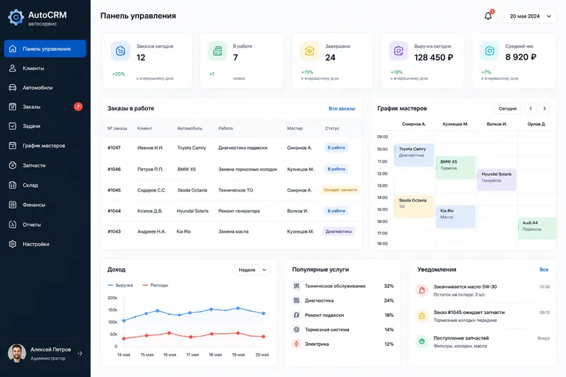
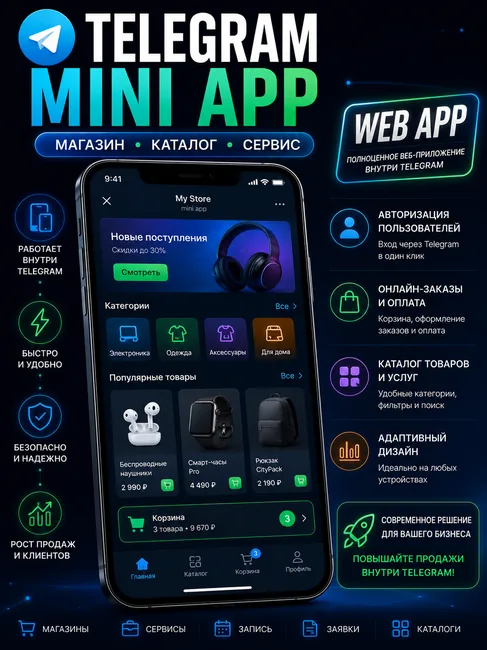
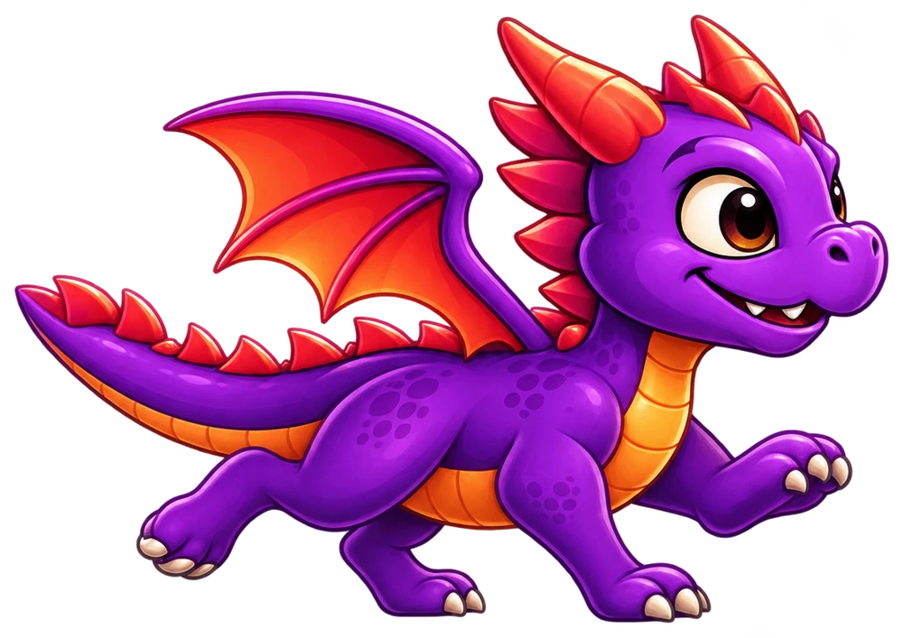

Telegram-боты
Каталоги, заявки, уведомления, Mini Apps и интеграции.
Разрабатываю Telegram-ботов, сайты и приложения, автоматизирую рабочие процессы. Создаю собственные цифровые продукты и игры.
 KRIPKE LABCODE / AUTOMATION / GAMES
KRIPKE LABCODE / AUTOMATION / GAMESОтдельная задача или разработка продукта — обсуждаем объём до начала работы.
Каталоги, заявки, уведомления, Mini Apps и интеграции.
Лендинги, панели управления и личные кабинеты.
Интеграции и инструменты для сокращения ручных операций.
Обработка открытых данных, Excel, Google Sheets и отчёты.
Прототипы, WebView-витрины и мобильные продукты.
Создаю 2D-игры на заказ по согласованному ТЗ: механика, управление, уровни и интерфейс. Платформа и объём работ обсуждаются отдельно.
Что входит в разработку →Иллюстрации возможных решений Kripke Lab, а не отчёты о выполненных клиентских проектах.
Сбор обращений и уведомления администратору.
Каталог товаров и удобный сценарий заказа.
Интеграция оплаты для разрешённых товаров и услуг.
Мобильная WebView-витрина на основе веб-сайта.
Сбор доступных данных и выгрузка в таблицы.

Заявки, клиенты, статусы и управление процессами.

Веб-интерфейс внутри Telegram.
Таблицы, отчёты и автоматизация рутины.
Примеры визуального оформления товарных карточек.
Для оценки нужны задача и чёткое ТЗ. Цена и сроки определяются после согласования требований.
Что должно получиться, кто будет пользоваться продуктом и какие функции обязательны. Используйте готовый шаблон.
Подготовить ТЗИзучаю ТЗ, уточняю детали и предлагаю стоимость, этапы и формат передачи проекта.
Отправить ТЗРазрабатываю согласованный функционал, демонстрирую результат, проверяю его по требованиям и передаю проект в согласованном формате.
Не надо заполнять форму повторно. Пришлите свой документ, примеры или описание в Telegram.
Одно из направлений Kripke Lab: мобильные и браузерные игры.

Настольная игра-ходилка с кубиком, персонажами и тематическими игровыми картами.
Дата выпуска пока не объявлена.
Kripke Lab — лаборатория независимого разработчика Барри Крипке. Здесь объединяются разработка на заказ, автоматизация, собственные приложения и игры. В Telegram делюсь практическими решениями, новостями и процессом разработки.
Расскажите, какой проект нужен и какой результат вы хотите получить.